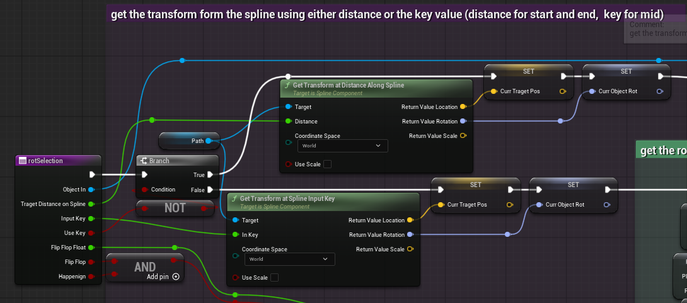
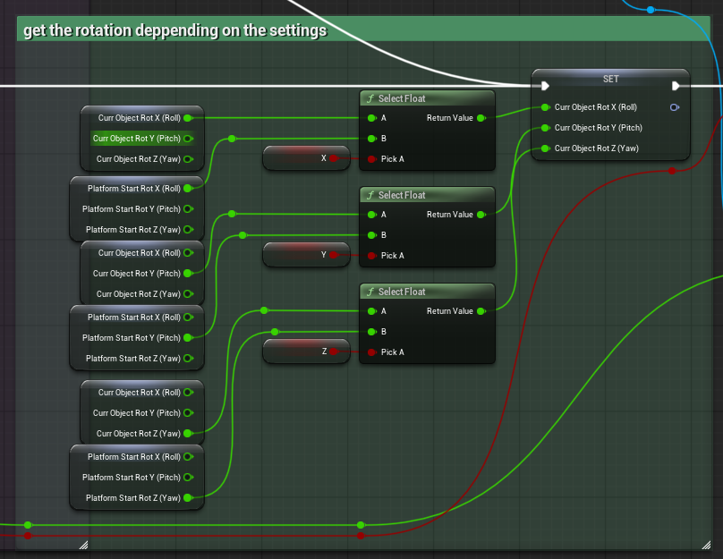
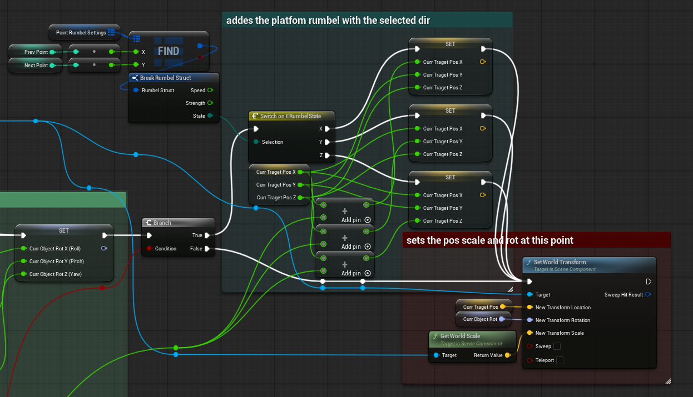
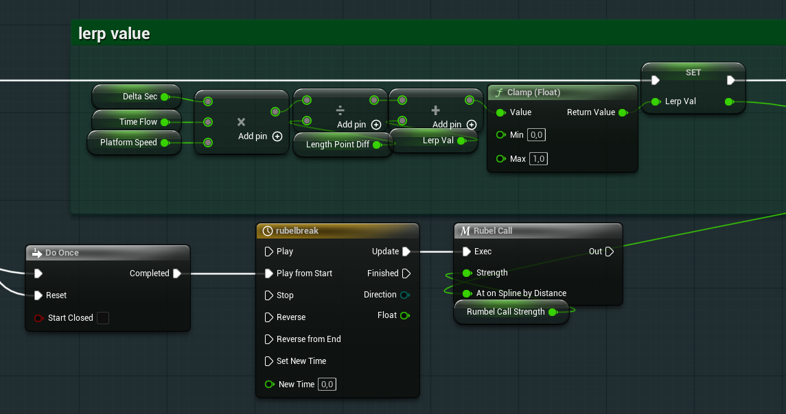
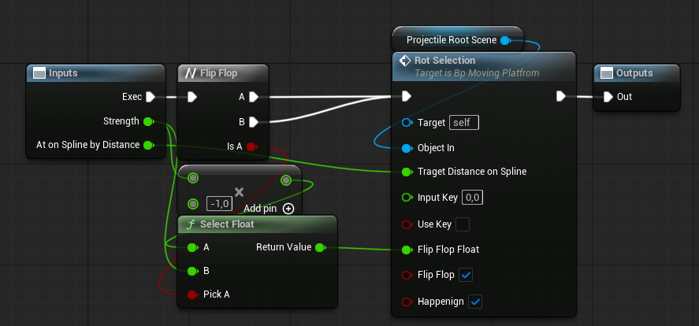
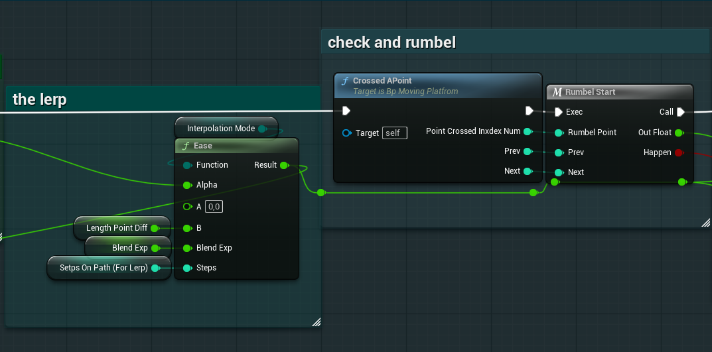
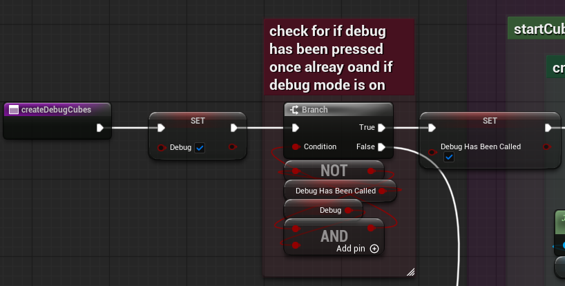
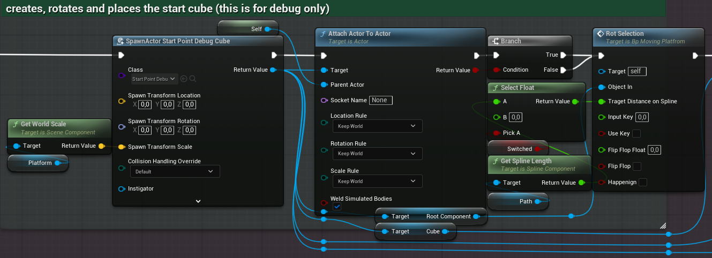
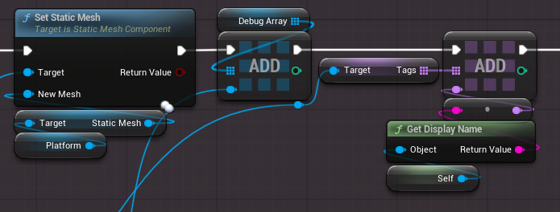

Entropy
Entropy was a 9 week group project. The project was to make a game and my group made a puzzle platformer made in unreal. I made the platfrom that the player interact with across the game. The platfrom was made not just as a game play interaction but also with ease of use in mind. It has a in built debug tool, easy swap model, easy make pathing and a lot of customizable settings
The platforms I made fallowed splines, going from point to point along it. They could at any point reverse their diraction independtly of each other. The video is one of the earliest interations

On Begin
On begin play we the platforms set up a few things. From left to right we do this; We set up the lerp value, 0 or 1, and the TimeFlow Value, -1 or 1, depending on if the platfrom starts reversed or not. Lerp determens where the platform should be on the spline, TimeFlow determens what direction the platfrom should move.We save the plafrorms rotaion for later. Then we set the platform world transfrom to be gotten from the spline either at the start or the end of the spline using a custom function called "Rot Selection", I will expain it later. we get the length of the spline and save it to length diff. We save the platfrom speed veriable. Then we change out the colider for a simple mesh
Last we check if we need the debug platfroms, then we have code that I did not write so I will not explain it

This is inside of the function "Rot Selection" a better name would be "Get Transform At Spline Point/Length and/or Apply Rumble" but this function got more and more functinality to it over time and I didnt rename it to corispond with that. Had a made it today I would have updated the name to fit it better.
Like before going from left to right; we start of by checking if this Transfrom should be gotten with either the distance on the spline or the key. Key is a value gotten from the spline points and is used once in the whole game inside the function "CreateDebugCubes". After we have check if we should use key or distance we set our target pos and rot that we get from the spline. Note that we dont touch scale as the platfrom may have a set scale that the spline and points do not share.


This part looks more complicated then it is. Lets start with the Branch node it takes in the bool "flipFlop" and "happening" from the variables that goes into the function happening is only true durring a "Rumble" event. "flipFlop" is true when we want a rumble event to happen. Better names would be happening = CurrentlyRumbeling and flipFlop = shouldRumble.
So if this Branch is true we do rumble, rumble happens between 2 spline points. We get the spline point from a map, basicly a list of unique elements with the keys being the points you want it to rumble between. From this we get out a state which is either rumble on X, Y or Z axis. The strength of which is set by a input veriable that is called "flipFlop float" but a better name would be rumble Strength. this seems like it should be decied by the strength you put into the element in the map but that is used else where and not here.
Thats kinda all for what happens inside of EventBegin lets go to Event Tick right after this video
At the end it looks something like this. Rumbles when shot, stops countines. Let see how all of this works now

Event Tick
durring a single tick a lot has to happen. The platform must travel but durring this the travel it can be interupted at anypoint and so it needs to react. we dont want the platfrom to just pass through an object that is in the way (totaly wasnt something I didnt add in the beinging) or not react when the player is interacting with it.so how do we do this? here the step by step expenation. Lets go with the top part first the one within "lerp value". We multipy DeltaTime with Platfrom speed to keep the speed consistant between framerates but also multipy it by timeflow, timeflow controls which direction the lerp should go. After that we divide it by the "Length point diff" which is the same as total length of the spline. Why do we do this tho? well to keep the same speed consistant between platfroms. A platform that moves with a speed of 5 will go faster on longer distances without this. That kinda makes sense, if the speed of which the lerp is increasing is the same but the distances are diffrent then one will have to move faster to cover their distance. Here's an example;
Say we have two platform of the same speed, 5 in this case, but one has a distance of 10m and the other 20m. When the 10m platfrom has covered half of its distance it will be at 5m but the one with 20m will be at 10m. Both of their lerp says 0.5 so both must be half way there. Their speed no longer matters to how fast they will be going. Thats why we divide by the length.
then we add the old larp val, clamp it to be sure it doesnt go over 1.0 or below 0.0 and then set the new lerp value.
Now on the blow path we have a do once, this is fired once the platfrom gets hit by a ball. When hit it will rumbel in place ,you saw a video of that earlier. Lets look at that Rumble call Marco.

as you can see this one just calls the Rot Selection function with a flip flop node. This achives the rumble effect basicly just pushing the platforms model a little everyframe. By having it flip between a posative value and a negative value you get it to shake or rumble in this case

back to the larp we put it into an Ease node is unreals basic lerp functions. We give it what type of lerp we want, the current lerp value, the numbers we want to lerp between, and then we have some settings that only show up deppending on what lerp we want. We get out the distance we should be on the path.
after we have lerp the value we call Crossed a point a function returns which point you crossed and what points you are between right now. then we call rumbel start this is another rumble function but this one uses the strength and speed from inside the map from eariler. So here is where you can controll how fast you want the paltfrom to be moving while rumbeling and how strong the rumble should be
afther this we just apply the distance and rot to the transfrom of the platform and check for colitons
Now to show of the debug feature. The platfrom needed an easy way for the deginers to see how they would look without having them play out their path. So I made this.
it's a simple feature, it spawns gameobjects that dont have a collision at the points inside of the spline path. The objects gets a slightly transpert material and the moddle of the platfrom, in this instandance a cube. They middle points are yellow while the end and start point are blue and green respectivley.
so how does this one work?

first we set the debug bool to true, this makes sure that when you start the game we dont destroy the debug cubes. after that we go to another branch, now the condiction for this one is just layered weird and thats why it looks imposing. there is 2 bools here 1 that is pointless the other one isnt. first we check if debug is true which we just set so it will always be true rigth before this branch and then we check if debug has been called before this. if it hasnt then we spawn cubes if it has been called we destroy the cubes.
basicly this is just switching between spawing and killing cubes deppending if you have called this function before. The name of this function is missleading becosue it doesnt just create them but also destroys them.

This is where we create the start cube, the first cube out of all of the debug cubes. simply we spawn this actor in attach it to the platfrom and then move it pos and rot to be where it should be, we get the pos and rot from the spline

then we update the mesh of the start cube to be the same as the platfrom, then we add it to an array of debug cubes and last we tag it with the name of the platfrom.
we then repeat this for every other debug object we need. we loop over every point in the spline and place a cube there.

and this is how we destory the cubes, we have to loops, one the destroys all actors in the debug array and one that destroy all actors of a certain tag.